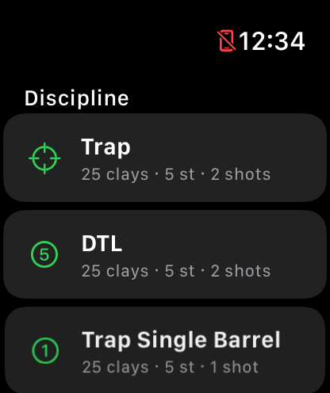
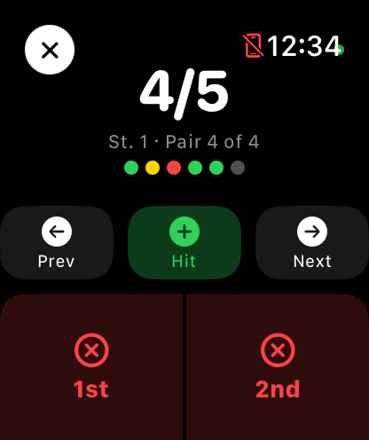
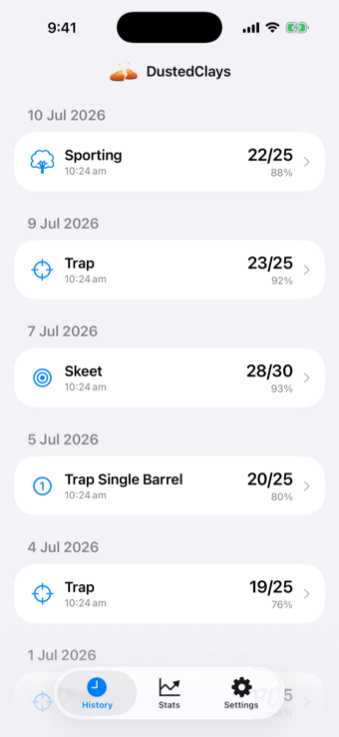
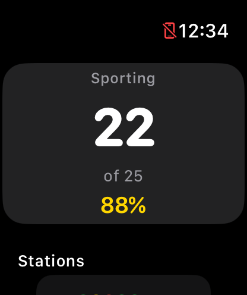
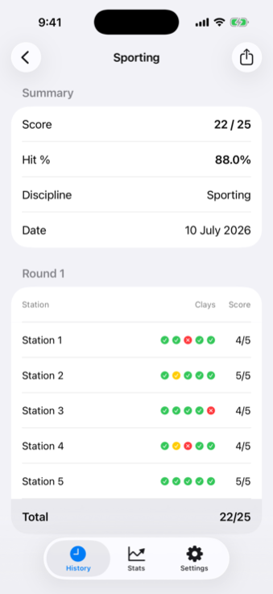
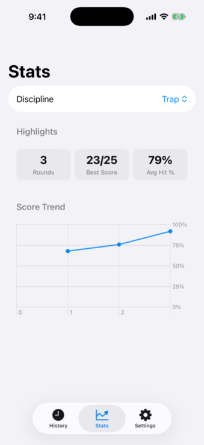
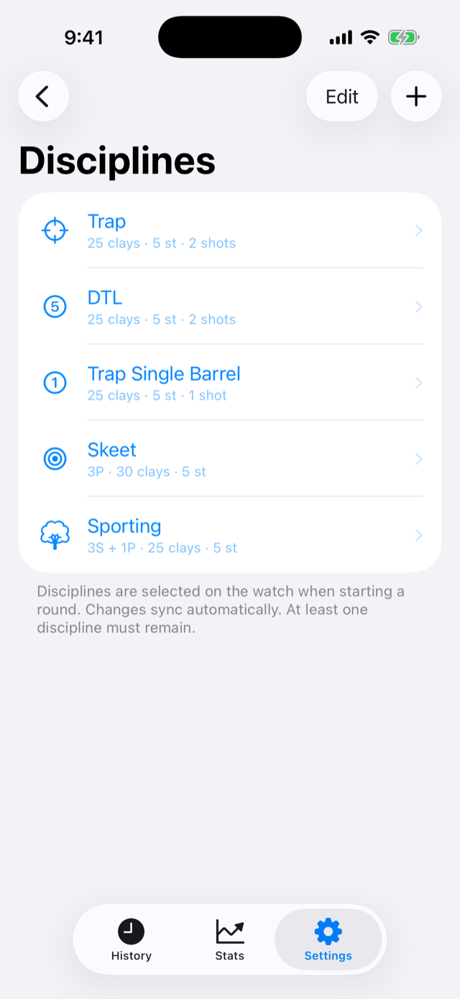

Your Apple Watch feels the recoil and scores the round for you, whether you shoot Trap, Skeet, Sporting or something you've built yourself.
Start the round, shoot, and tap only when you miss.

Open the watch app and choose Trap, Skeet, Sporting, or any discipline you've built yourself. Tap Start and the watch takes it from there.

The motion sensors pick up each shot from the recoil and score it as a hit. Missed one? A quick tap fixes it without looking down, and pairs get a separate button for each bird.

Rounds sync to your iPhone on their own, right down to the second barrel on each clay. Watch your averages climb over the season.
Recoil is unmistakable to a wrist-worn motion sensor. Every shot registers the instant you take it, even with the screen down and your eyes on the trap.
A fast follow-up shot counts as your second barrel on the same clay. In Sporting, pairs score one shot per bird and each bird gets its own Miss button.
Build custom disciplines on the iPhone, right down to the stations, target sequence and shots per clay. They show up on the watch automatically.
A live G-force readout lets you tune detection to your gun, load and mount in a couple of shots. Set it once, forget it.
The watch keeps sensing between stations and while your wrist is down on the gun, so a full round tracks start to finish without waking the screen.
Your scores live on your devices. There's no account, no analytics and no cloud, so nothing ever leaves your watch and phone.



